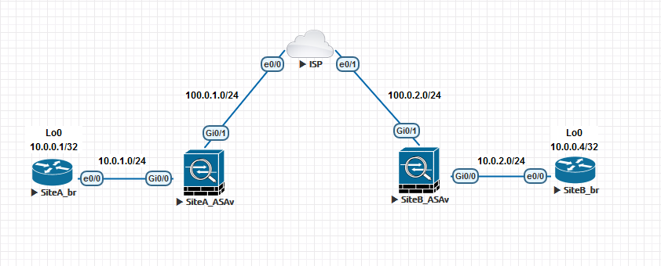

L2L IPsec VPN setup on Cisco ASA with VTI
03 Oct 2017С появлением VTI (Virtual Tunnel Interface) на Cisco ASA стало возможно настроить Route-Based IPsec VPN. Впервые данная функция активирована в версиях прошивки 9.7(x). В версиях 9.8(x) добавлена поддержка IKEv2 (9.7.(x) поддерживает только IKEv1). Configuration guide для версий 9.8(x).
Из значимых ограничений можно отметить следующее:
- Возможность использовать поверх VTI только BGP, либо статическую маршрутизацию;
- Отсутствие поддержки Multi-Context Mode;
- Отсутствие поддержки IPv6.
Тестовая топология:

Используется ASAv с прошивкой версии 9.8(1).
Цель - обеспечить связность между интерфейсами Lo0 маршрутизаторов SiteA_br и SiteB_br. Между маршрутизаторами и ASAv настроен протокол OSPF. Между VTI двух ASAv настроен протокол iBGP. Между протоколами OSPF и iBGP на ASAv настроено перераспределение маршрутов.
Конфигурация SiteA_ASAv:
hostname SiteA-ASAv
interface Gi0/1
nameif outside
ip address 100.0.1.2 255.255.255.0
no shutdown
interface Gi0/0
nameif inside
ip address 10.0.1.2 255.255.255.0
no shutdown
route outside 0.0.0.0 0.0.0.0 100.0.1.254
crypto ipsec ikev2 ipsec-proposal PS_L2L
protocol esp encryption aes-256
protocol esp integrity sha-1
crypto ipsec profile PR_L2L
set pfs group2
set ikev2 ipsec-proposal PS_L2L
set security-association lifetime seconds 86400 kilobytes unlimited
crypto ikev2 policy 10
encryption aes
integrity sha
group 2
prf sha
lifetime seconds 86400
interface tunnel 10
nameif l2l-vti
ip address 192.168.0.2 255.255.255.0
tunnel source interface outside
tunnel destination 100.0.2.3
tunnel mode ipsec ipv4
tunnel protection ipsec profile PR_L2L
tunnel-group 100.0.2.3 type ipsec-l2l
tunnel-group 100.0.2.3 ipsec-attributes
ikev2 remote-authentication pre-shared-key cisco
ikev2 local-authentication pre-shared-key cisco
access-list ACL_OUTSIDE extended permit ip any any
access-group ACL_OUTSIDE in interface outside
crypto ikev2 enable outside
router bgp 65000
address-family ipv4 unicast
neighbor 192.168.0.3 remote-as 65000
neighbor 192.168.0.3 next-hop-self
bgp redistribute-internal
redistribute ospf 1
exit-address-family
router ospf 1
network 10.0.1.0 255.255.255.0 area 0
redistribute bgp 65000 subnets
SiteB_ASAv настраивается зеркально.
В итоге, после применения данной конфигурации на ASAv и соответствующей настройки остальных устройств (включение OSPF) можно увидеть следующий вывод на маршрутизаторе SiteA_br:
SiteA_br#sh ip route
Gateway of last resort is not set
10.0.0.0/8 is variably subnetted, 5 subnets, 2 masks
C 10.0.0.1/32 is directly connected, Loopback0
O E2 10.0.0.4/32 [110/1] via 10.0.1.2, 00:32:23, Ethernet0/0
C 10.0.1.0/24 is directly connected, Ethernet0/0
L 10.0.1.1/32 is directly connected, Ethernet0/0
O E2 10.0.2.0/24 [110/1] via 10.0.1.2, 00:32:23, Ethernet0/0
Также с маршрутизатора SiteA_br доступен интерфейс Lo0 маршрутизатора SiteB_br:
SiteA_br#ping 10.0.0.4 source 10.0.0.1
Type escape sequence to abort.
Sending 5, 100-byte ICMP Echos to 10.0.0.4, timeout is 2 seconds:
Packet sent with a source address of 10.0.0.1
!!!!!
Success rate is 100 percent (5/5), round-trip min/avg/max = 3/4/6 ms